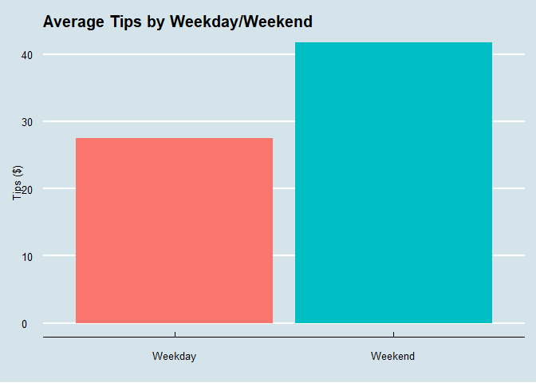
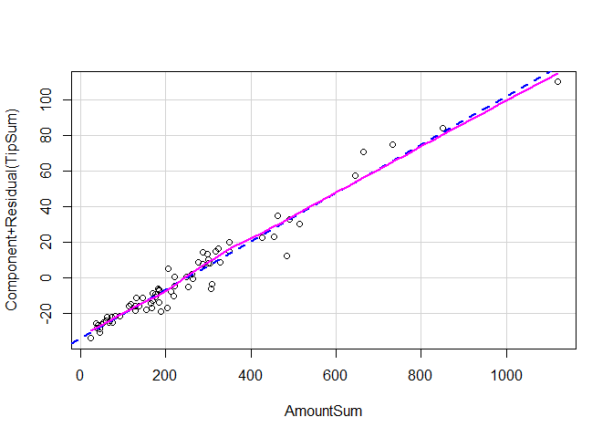
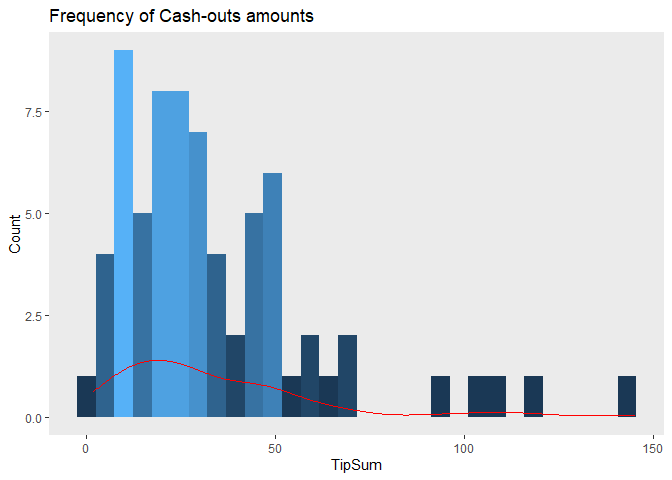
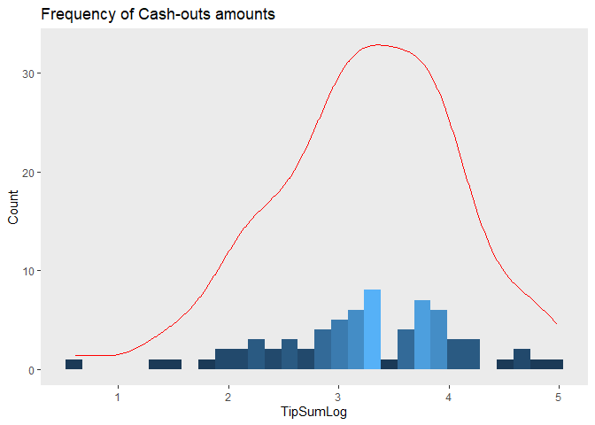
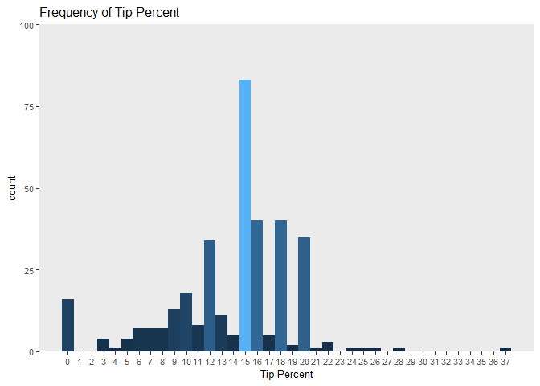

Optimizing Gratuity
Preface
This is the first part of an ongoing project analyzing the data surrounding my part time job as a pizza delivery driver. This project originally started as an assignment for POL 315 at SFU. I returned to it later in 2022 to fully flesh it out.
Section I. Research Question, Theory, and Hypotheses
I work a part-time job as a delivery driver at a pizza restaurant called “Me-n-Ed’s”, located in Port Coquitlam, BC, and it’s a great job! Management is very flexible with scheduling, and the restaurant uses company cars to make deliveries which are fueled and serviced by company dollars. While wage comprises the majority of a driver’s dollars per hour, tips also greatly influence our bottom line. Say I work 5 hours at $15.20/h, making 40 dollars in tips will increase my dollars per hour to 23.20! For comparison, according to indeed.com, the average salary for a lifeguard in BC is 22.65 dollars per hours, which is less than what I make delivering pizzas. Nevertheless, 40 isn’t always what we make. Sometimes, we make as little as 15 dollars in tips, which only increases one’s dollars per hour to 18.20. My goal is to maximize my tips by any means available to me.
What could account for this variance in tips? Some obvious factors are the amount of deliveries a driver takes during their shift and how much pizza they sell over all; more frequent and bigger sales are intuitively correlated with more tip money. How could I maximize these factors then? As is always the case with restaurants some days of the week are busier than others, and on busier days drivers take more deliveries (and therefore make more money). This means I have some means of controlling my tips by scheduling myself to work on the busiest days. I asked some co-workers what they though the busiest day of the week was, and there was a general consensus among drivers that either Fridays or Saturdays are the busiest. Since I typically work three days per week, I want to know on which three days I would end my shift with the highest tip-outs. (A note on vocabulary: I use the terms “Tip-out” and “Cash-out” interchangeably to refer to the amount of dollars in tips I make on a given day).
My main hypothesis is that on average, the highest total tip-outs are on Saturdays, followed by Fridays, followed by Sundays, i.e. weekends. To confidently demonstrate this ranking, I essentially have to make a complete ranking of each day of the week from best to worst in terms of average tips. In the case that I cannot confidently demonstrate this, I also make the logically weaker (but easier to prove) hypothesis that on average, my tips are better on weekends. Instead of ranking 7 categories representing each day of the week, we are simply comparing two categories: Fridays, Saturdays and Sundays (Weekends), compared to Mondays, Tuesdays, Wednesdays, and Thursdays (Weekdays).1
I was also curious about the roll the weather plays in the customers decision to tip. I’m not primarily interested in the correlation between rain and tips because it’s not something I can control to maximize my tips, but I figured it might be a significant variable to control for.
Section II. Preliminary Work
In Section II, I explain what data I’m using to conduct my research as well as an explanation of each variable. Furthermore, I demonstrate how I loaded, categorized and checked for data sanity in my data. I give more details on this process in the R-code blocks below in the form of notes.
rm(list = ls())
library(readxl)
#loading data
setwd("D:\\Everything\\School\\Me n Eds Sales Slips Data")
s <- read_xlsx("Slips.xlsx") #Sales receipts## Sales Receipts
library(plyr)
# Generating a column to represent tips as a ratio of the sale amount.
s$TipPercent <- round(s$Tip/s$Amount * 100)
s$Weekend <- s$`Day of Week` # Adding a Weekend dummy variable
s$Weekend[s$Weekend == "Mon"|s$Weekend =="Tue"|s$Weekend =="Wed"|s$Weekend =="Thu"] <- 1
s$Weekend[s$Weekend == "Fri"|s$Weekend =="Sat"|s$Weekend =="Sun"] <- 0
s$Weekend <- factor(s$Weekend, levels = c(1,0),
labels = c("Weekday", "Weekend"))
s$Precipitation[s$Precipitation == 0.0] <- 0
s$Precipitation[s$Precipitation >0.0 & s$Precipitation<=2.5] <- 1
s$Precipitation[s$Precipitation >2.5 & s$Precipitation<=10.0] <- 2
s$Precipitation[s$Precipitation > 10.0] <- 3
#Classifying rain levels
s$Precipitation <- factor(s$Precipitation, levels= c(2,0,1,3),
labels=c("Moderate Rain", "Light Rain", "No Rain", "Heavy Rain"))
# Re-ordering day of the week variable so Friday (day with most observations) is reference category
s$`Day of Week` <- factor(s$`Day of Week`, levels = c("Mon", "Tue", "Wed", "Thu", "Fri", "Sat", "Sun"))
s$`Day of Week` <- relevel(s$`Day of Week`, ref="Fri")
tpp <- ddply(s, c("Date", "`Day of Week`", "Weekend", "Precipitation"), summarize, #Compiling by Date
TipSum = sum(Tip), #Cash-out
AmountSum = sum(Amount), #Total sales amount on a given day (this includes tips)
TipSumLog = log(TipSum), #Log transformation in anticipation of non-normality
TipPercent = TipSum/AmountSum*100) #Tip Percent Frequencies
tpp <- tpp[-c(37), ]
head(tpp)## Date Day of Week Weekend Precipitation TipSum AmountSum TipSumLog
## 1 2022-01-07 Fri Weekend Heavy Rain 10.31 68.84 2.333114
## 2 2022-01-08 Sat Weekend Moderate Rain 8.83 49.04 2.178155
## 3 2022-01-09 Sun Weekend Light Rain 13.33 92.87 2.590017
## 4 2022-01-10 Mon Weekday Moderate Rain 7.36 40.90 1.996060
## 5 2022-01-11 Tue Weekday Heavy Rain 8.20 54.60 2.104134
## 6 2022-01-12 Wed Weekday Heavy Rain 7.44 37.22 2.006871
## TipPercent
## 1 14.97676
## 2 18.00571
## 3 14.35340
## 4 17.99511
## 5 15.01832
## 6 19.98925This data set, labeled “Slips”, is data I manually collected and compiled starting in January of this year (2022) until late March. My data source was sales receipts. Sales receipts are receipts printed from a credit machine when a customer pays for their order at the door as proof of purchase. The credit machine prints two receipts, one for the customer and one for the driver. If the customer does not want their receipt - which is often the case - the driver will discard their extra receipt in a paper bag in the company car they’re driving that day. Once a week, I would collect each paper bag at the end of my shift and compile them into an excel spreadsheet.
Each receipt only had three relevant pieces of information printed on it: The price of the customers order in dollars, The amount the customer tipped in dollars, and the date of the transaction. After compiling around 350 receipts, I used an excel formula to determine the day of the week of the listed dates, and then reduced that to either Weekend or Weekday in R labelled Day of Week` and Weekend respectively. Furthermore, I found the percent the customer tipped on their order by dividing the tip amount by the order amount and multiplying by 100. Next, I made Friday the reference category of my Day of the Week variable because it had the highest value.
Next, I compiled all this data into another data frame sorted by Date. For instance, I took two deliveries on January 7th, and made 5.31 on the first one, and then 5.00 on the second one in tips. I simply took the sum of all these values for a given date (10.31) and listed them in one row, under the TipSum variable. In other words; TipSum represents my cash-out on any given date. I did the same for the order amount, labelled AmountSum. In precautionary anticipation of any skewedness in my data, I’m including a log-transformation of my cash-out variable, labelled TipSumLog, where TipSumLog = log(TipSum).2
Finally, I gathered some historical precipitation data from an online resource (https://pittmeadows.weatherstats.ca/charts/precipitation-daily.html), and added precipitation values in millimeters for each date in my data set. I decided to categorize the numeric precipitation values into 4 different categories: No Rain, Light Rain, Moderate Rain and Heavy Rain.
To summarize, my main outcome variable is cash-out amount (Numeric, dollars), my independent variables include Day of the Week (Categorical), Weekend/Weekday Status (Dummy variable), Order amount delivered (Numeric, dollars) and Rain levels (Categorical), all sorted by the Date (Timeseries). Due to the nature of the data collection process, there were one or two missing values caused by typos, which were corrected in the data processing stage.
Section III. Estimate Your OLS Models
Section III involves looking at the relationship between my main independent variable and the outcome I am interested in. First, I will look at the bivariate relationship. Then I will look at a more extensive multivariate analysis and interpret the results for both hypotheses.
Section III, Part 1. Bivariate analysis
tpdlm <- lm(TipSum ~ `Day of Week`, data = tpp) # Defining the linear model representing the bivariate relationship between TipSum and the Day of the Week for hypothesis 1
summary(tpdlm)##
## Call:
## lm(formula = TipSum ~ `Day of Week`, data = tpp)
##
## Residuals:
## Min 1Q Median 3Q Max
## -41.32 -17.59 -6.99 9.82 94.71
##
## Coefficients:
## Estimate Std. Error t value Pr(>|t|)
## (Intercept) 40.2808 8.0140 5.026 4.4e-06 ***
## `Day of Week`Mon -14.2190 11.5882 -1.227 0.224
## `Day of Week`Tue -15.8708 11.8867 -1.335 0.187
## `Day of Week`Wed -0.3965 13.2031 -0.030 0.976
## `Day of Week`Thu -17.8696 12.6713 -1.410 0.163
## `Day of Week`Sat 9.8692 11.5882 0.852 0.398
## `Day of Week`Sun -5.3836 11.5882 -0.465 0.644
## ---
## Signif. codes: 0 '***' 0.001 '**' 0.01 '*' 0.05 '.' 0.1 ' ' 1
##
## Residual standard error: 27.76 on 63 degrees of freedom
## Multiple R-squared: 0.1144, Adjusted R-squared: 0.03001
## F-statistic: 1.356 on 6 and 63 DF, p-value: 0.2464tpwlm <- lm(TipSum ~ Weekend, data = tpp) # Defining the linear model representing the bivariate relationship between TipSum and the Weekend dummy variable for hypothesis 2
summary(tpwlm)##
## Call:
## lm(formula = TipSum ~ Weekend, data = tpp)
##
## Residuals:
## Min 1Q Median 3Q Max
## -39.882 -18.343 -6.676 7.905 103.128
##
## Coefficients:
## Estimate Std. Error t value Pr(>|t|)
## (Intercept) 27.479 4.576 6.005 8.35e-08 ***
## WeekendWeekend 14.253 6.567 2.170 0.0335 *
## ---
## Signif. codes: 0 '***' 0.001 '**' 0.01 '*' 0.05 '.' 0.1 ' ' 1
##
## Residual standard error: 27.46 on 68 degrees of freedom
## Multiple R-squared: 0.06479, Adjusted R-squared: 0.05104
## F-statistic: 4.711 on 1 and 68 DF, p-value: 0.03347Regarding my first hypothesis, the bivariate regression between the calendar day and cash-outs of all given dates does not produce any significant results; we cannot say with certainty that any particular day of the week is correlated with higher tip-outs. I could not even begin to reject the main null hypothesis based on these results.
Turning to my second hypothesis, the bivariate regression between weekday/weekend status and cash-outs does produce significant results. We see that on average, weekends are correlated with a $14.25 increase in tips compared to weekdays: on average I make around $27.48 in tips on weekdays and $41.73 on weekends.
Though accounting for our control variables for our first hypothesis would theoretically produce a more accurate model, given the sheer insignificance of these results a more precise model in the form of a multiple regression analysis isn’t likely to produce results sufficient to reject the null. Unlike the bivariate regression of our first model, the model for our second hypothesis could very well benefit from the addition of precipitation and order amount as control variables. It’s completely possible that accounting for these two un-modeled variables could rob significance from our results above.
library(ggplot2)
library(ggthemes)
# visual representation of average tips for each research category and their respective hypotheses
ggplot(data=tpp, aes(x=`Day of Week`, y=TipSum)) +
geom_bar(stat="summary", aes(fill=`Day of Week`), size=2)+
labs(x="", y="Tips ($)")+
theme_economist()+
geom_smooth(method = lm)+
theme(legend.position = "none")+
ggtitle("Average Tips by Day of Week")
ggplot(data=tpp, aes(x=Weekend, y=TipSum)) +
geom_bar(stat="summary", aes(fill=Weekend), size=1)+
labs(x="", y="Tips ($)")+
theme_economist()+
geom_smooth(method = lm)+
theme(legend.position = "none",
text = element_text(size=10))+
ggtitle("Average Tips by Weekday/Weekend")
Section III, Part 2. Multiple Regression
tpdlmm <- lm(TipSum ~ `Day of Week` + AmountSum + Precipitation, data= tpp) # Defining the multivariate model representing multiple regressions analysis
summary(tpdlmm)##
## Call:
## lm(formula = TipSum ~ `Day of Week` + AmountSum + Precipitation,
## data = tpp)
##
## Residuals:
## Min 1Q Median 3Q Max
## -16.6835 -2.8527 0.8836 3.6846 11.7521
##
## Coefficients:
## Estimate Std. Error t value Pr(>|t|)
## (Intercept) -1.70692 2.14829 -0.795 0.4301
## `Day of Week`Mon 2.69317 2.41052 1.117 0.2684
## `Day of Week`Tue 1.82903 2.49356 0.734 0.4662
## `Day of Week`Wed 4.42647 2.70523 1.636 0.1071
## `Day of Week`Thu -0.16291 2.66630 -0.061 0.9515
## `Day of Week`Sat 3.76959 2.39709 1.573 0.1212
## `Day of Week`Sun 5.83434 2.44290 2.388 0.0201 *
## AmountSum 0.13590 0.00364 37.340 <2e-16 ***
## PrecipitationLight Rain -0.34361 2.01601 -0.170 0.8652
## PrecipitationNo Rain 0.47589 1.91859 0.248 0.8050
## PrecipitationHeavy Rain -1.41900 1.86852 -0.759 0.4506
## ---
## Signif. codes: 0 '***' 0.001 '**' 0.01 '*' 0.05 '.' 0.1 ' ' 1
##
## Residual standard error: 5.663 on 59 degrees of freedom
## Multiple R-squared: 0.9655, Adjusted R-squared: 0.9596
## F-statistic: 165.1 on 10 and 59 DF, p-value: < 2.2e-16tpwlmm <- lm(TipSum ~ Weekend + AmountSum + Precipitation, data=tpp) # Doing the same for the second hypothesis
summary(tpwlmm)##
## Call:
## lm(formula = TipSum ~ Weekend + AmountSum + Precipitation, data = tpp)
##
## Residuals:
## Min 1Q Median 3Q Max
## -19.7999 -2.3041 0.7308 2.9308 14.1873
##
## Coefficients:
## Estimate Std. Error t value Pr(>|t|)
## (Intercept) 0.160096 1.480976 0.108 0.914
## WeekendWeekend 0.890127 1.457937 0.611 0.544
## AmountSum 0.135727 0.003616 37.539 <2e-16 ***
## PrecipitationLight Rain 0.101026 2.037916 0.050 0.961
## PrecipitationNo Rain 0.954759 1.894097 0.504 0.616
## PrecipitationHeavy Rain -0.718763 1.863535 -0.386 0.701
## ---
## Signif. codes: 0 '***' 0.001 '**' 0.01 '*' 0.05 '.' 0.1 ' ' 1
##
## Residual standard error: 5.826 on 64 degrees of freedom
## Multiple R-squared: 0.9604, Adjusted R-squared: 0.9573
## F-statistic: 310.2 on 5 and 64 DF, p-value: < 2.2e-16When controlling for the order amount and the rain level we can see that the order amount is significantly correlated with higher tips for both hypotheses. In both cases, we see that a one dollar increase in the order amount is correlated with a roughly $0.14 increase in tips. This makes a lot of sense, because tipping 15% of the order amount is considered the norm, and a $0.14 increase in tips for every dollar increase in amount is roughly a 15% increase. Furthermore, we saw that precipitation was not significantly correlated with cash-outs.
Regarding our first hypothesis, we now see that Sundays are significantly correlated with a $5.83 increase in tips compared to Friday. Though this result is significant, it is not enough information to confirm our hypothesis, because we don’t have significant values for Saturday or Friday to compare Sunday to. This confirms my suspicion that multiple regression does not make any progress in confirming my main hypothesis.
Regarding our second hypothesis, weekends are no longer significantly correlated with tips. This undermines our capacity to confirm our second hypothesis, and reject our second null.
Section IV Regression Diagnostics
In Section IV I confirm my analysis satisfies regression assumptions: linearity, additivity, assumptions about the error terms (specifically, usual cases and homoskedasticity), and multicollinearity. Each assumption requires both an analysis and written explanation.
Section IV, Part 1. Linearity
library(car)
crPlot(tpdlmm, "AmountSum")
crPlot(tpwlmm, "AmountSum")
Non-linearity is when the relationship between an independent variable and a dependent variable is not linear, i.e. not a straight line; a curved line. Un-modelled non-linearity is a problem because it means a linear model does not accurately represent the correlation between the outcome and research variable. To test our assumption of linearity, we’ll plot the residuals (the difference between the predicted value of tips and the actual values) of our Tip variable against the order amount. We’re looking for large deviations of residual (traced by a smooth pink line) from the expected values (the dashed blue line), which we don’t see for either hypothesis. This suggests that it’s safe to assume our model is linear.
Section IV, Part 2. Additivity
dwamint <- lm(TipSum ~ `Day of Week` + AmountSum + Precipitation + `Day of Week`*AmountSum, data=tpp)
summary(dwamint)##
## Call:
## lm(formula = TipSum ~ `Day of Week` + AmountSum + Precipitation +
## `Day of Week` * AmountSum, data = tpp)
##
## Residuals:
## Min 1Q Median 3Q Max
## -18.174 -2.754 1.121 2.858 11.131
##
## Coefficients:
## Estimate Std. Error t value Pr(>|t|)
## (Intercept) -3.121128 2.827903 -1.104 0.2747
## `Day of Week`Mon 1.701746 4.370748 0.389 0.6986
## `Day of Week`Tue 2.952111 4.512479 0.654 0.5158
## `Day of Week`Wed 0.233517 4.386120 0.053 0.9577
## `Day of Week`Thu 1.445962 4.177960 0.346 0.7306
## `Day of Week`Sat 9.135624 3.896596 2.345 0.0228 *
## `Day of Week`Sun 4.440349 3.997083 1.111 0.2716
## AmountSum 0.138684 0.006773 20.475 <2e-16 ***
## PrecipitationLight Rain 1.211983 2.119148 0.572 0.5698
## PrecipitationNo Rain 0.456024 1.988259 0.229 0.8195
## PrecipitationHeavy Rain -0.430723 1.904349 -0.226 0.8219
## `Day of Week`Mon:AmountSum 0.007140 0.017823 0.401 0.6903
## `Day of Week`Tue:AmountSum -0.002553 0.018792 -0.136 0.8924
## `Day of Week`Wed:AmountSum 0.015697 0.012188 1.288 0.2034
## `Day of Week`Thu:AmountSum -0.006268 0.015640 -0.401 0.6902
## `Day of Week`Sat:AmountSum -0.015622 0.009431 -1.657 0.1035
## `Day of Week`Sun:AmountSum 0.006498 0.012400 0.524 0.6025
## ---
## Signif. codes: 0 '***' 0.001 '**' 0.01 '*' 0.05 '.' 0.1 ' ' 1
##
## Residual standard error: 5.555 on 53 degrees of freedom
## Multiple R-squared: 0.9702, Adjusted R-squared: 0.9612
## F-statistic: 107.7 on 16 and 53 DF, p-value: < 2.2e-16weamint <- lm(TipSum ~ Weekend + AmountSum + Precipitation + Weekend*AmountSum, data=tpp)
summary(weamint)##
## Call:
## lm(formula = TipSum ~ Weekend + AmountSum + Precipitation + Weekend *
## AmountSum, data = tpp)
##
## Residuals:
## Min 1Q Median 3Q Max
## -19.3429 -2.9072 0.5624 2.9719 10.8939
##
## Coefficients:
## Estimate Std. Error t value Pr(>|t|)
## (Intercept) -2.042655 1.915015 -1.067 0.2902
## WeekendWeekend 4.130397 2.323774 1.777 0.0803 .
## AmountSum 0.146398 0.006993 20.935 <2e-16 ***
## PrecipitationLight Rain 0.466863 2.015268 0.232 0.8176
## PrecipitationNo Rain 0.512134 1.879861 0.272 0.7862
## PrecipitationHeavy Rain -0.233512 1.853469 -0.126 0.9001
## WeekendWeekend:AmountSum -0.014505 0.008185 -1.772 0.0812 .
## ---
## Signif. codes: 0 '***' 0.001 '**' 0.01 '*' 0.05 '.' 0.1 ' ' 1
##
## Residual standard error: 5.731 on 63 degrees of freedom
## Multiple R-squared: 0.9623, Adjusted R-squared: 0.9587
## F-statistic: 267.7 on 6 and 63 DF, p-value: < 2.2e-16Non-additivity, also known as an interaction is when the relationship between an independent variable and the outcome variable depends on the values of another variable. Failure to account for interactions makes less accurate linear models. To test additivity, we’ll model an interaction between the day of the week/weekend status and the order amount variable. The reason we’re testing an interaction between these two independent variables, and not precipitation, is because I know from experience that weekends are busier than week days, and therefore have higher values of total order amount. It’s not necessarily that people are ordering more food on weekends, rather there are just more people ordering on weekends. However, even though order amounts are higher on weekends, I believe that people will not be tipping more than their order amount would predict on weekends than weekdays. I hypothesize that the interaction between the day of the week/weekend status will have a negligible correlation with tips, let’s say a positive coefficient that’s less than 1, given that the interaction is in fact significant. To be clear, my additivity hypothesis is a conditional proposition: IF the interaction is significant, THEN the coefficient is positive but less than one.
Since I already have two working hypotheses, I’ll have to test my additivty hypothesis for both models. Interpreting the multiple regression models including the interaction variable, we see that the relationship between total order amount and cash-out amount is not conditional on which day of the week it happens to be, or if it happens to be a weekend. My conditional hypothesis was vacuously true for both models because the interaction was not significant. (A conditional proposition is true when it’s antecedent clause is false.) I could find no significant interactions in my models, so it’s safe to assume our data is additive.
Section IV, Part 3. Unusual cases & heteroskedasticity
#Normality
ggplot(tpp, aes(x=TipSum, y = ..count..))+
geom_histogram(aes(fill = ..count..))+
scale_y_continuous(name = "Count") +
ggtitle("Frequency of Cash-outs amounts")+
theme(legend.position = "none", panel.border = element_blank(),
panel.grid.major = element_blank(),
panel.grid.minor = element_blank(),)+
geom_density(color="red")
library(car)
logdlmm <- lm(TipSumLog ~ `Day of Week` + AmountSum + Precipitation, data=tpp)
summary(logdlmm)##
## Call:
## lm(formula = TipSumLog ~ `Day of Week` + AmountSum + Precipitation,
## data = tpp)
##
## Residuals:
## Min 1Q Median 3Q Max
## -1.89039 -0.14611 0.09825 0.28043 0.58108
##
## Coefficients:
## Estimate Std. Error t value Pr(>|t|)
## (Intercept) 2.3603002 0.1759364 13.416 <2e-16 ***
## `Day of Week`Mon 0.1169072 0.1974117 0.592 0.556
## `Day of Week`Tue -0.0132046 0.2042128 -0.065 0.949
## `Day of Week`Wed 0.0163281 0.2215474 0.074 0.941
## `Day of Week`Thu -0.2435917 0.2183594 -1.116 0.269
## `Day of Week`Sat 0.1393906 0.1963120 0.710 0.480
## `Day of Week`Sun 0.0600420 0.2000636 0.300 0.765
## AmountSum 0.0034462 0.0002981 11.562 <2e-16 ***
## PrecipitationLight Rain 0.0492576 0.1651029 0.298 0.766
## PrecipitationNo Rain 0.0061726 0.1571246 0.039 0.969
## PrecipitationHeavy Rain -0.1019849 0.1530241 -0.666 0.508
## ---
## Signif. codes: 0 '***' 0.001 '**' 0.01 '*' 0.05 '.' 0.1 ' ' 1
##
## Residual standard error: 0.4637 on 59 degrees of freedom
## Multiple R-squared: 0.7426, Adjusted R-squared: 0.699
## F-statistic: 17.02 on 10 and 59 DF, p-value: 5.693e-14logwlmm <- lm(TipSumLog ~ Weekend + AmountSum + Precipitation, data=tpp)
summary(logwlmm)##
## Call:
## lm(formula = TipSumLog ~ Weekend + AmountSum + Precipitation,
## data = tpp)
##
## Residuals:
## Min 1Q Median 3Q Max
## -1.8616 -0.1996 0.1139 0.3116 0.5145
##
## Coefficients:
## Estimate Std. Error t value Pr(>|t|)
## (Intercept) 2.339504 0.116325 20.112 <2e-16 ***
## WeekendWeekend 0.080292 0.114515 0.701 0.486
## AmountSum 0.003483 0.000284 12.265 <2e-16 ***
## PrecipitationLight Rain 0.044912 0.160070 0.281 0.780
## PrecipitationNo Rain -0.022885 0.148774 -0.154 0.878
## PrecipitationHeavy Rain -0.095057 0.146373 -0.649 0.518
## ---
## Signif. codes: 0 '***' 0.001 '**' 0.01 '*' 0.05 '.' 0.1 ' ' 1
##
## Residual standard error: 0.4576 on 64 degrees of freedom
## Multiple R-squared: 0.7281, Adjusted R-squared: 0.7069
## F-statistic: 34.28 on 5 and 64 DF, p-value: < 2.2e-16ggplot(tpp, aes(x=TipSumLog, y = ..count..))+
geom_histogram(aes(fill = ..count..))+
scale_y_continuous(name = "Count") +
ggtitle("Frequency of Cash-outs amounts")+
theme(legend.position = "none", panel.border = element_blank(),
panel.grid.major = element_blank(),
panel.grid.minor = element_blank(),)+
geom_density(color="red")
outlierTest(logdlmm)## rstudent unadjusted p-value Bonferroni p
## 27 -5.370143 1.4486e-06 0.0001014
## 53 -4.506757 3.2454e-05 0.0022718outlierTest(logwlmm)## rstudent unadjusted p-value Bonferroni p
## 27 -5.095281 3.4066e-06 0.00023846
## 53 -4.164164 9.6757e-05 0.00677300#Heteroskedasticity
ncvTest(logdlmm)## Non-constant Variance Score Test
## Variance formula: ~ fitted.values
## Chisquare = 2.205876, Df = 1, p = 0.13749ncvTest(logwlmm)## Non-constant Variance Score Test
## Variance formula: ~ fitted.values
## Chisquare = 1.472684, Df = 1, p = 0.22492A big problem I should’ve addressed first is outliers and skewness, AKA non-normality. Normality is the assumption that the error terms of a linear model are random, and do not follow any predictable pattern. Failing to account for predictable patterns in the distribution of error terms suggests that our regression model is missing some information about the relationship between the independent variable(s) and the outcome variable. This can happen when a few large outliers skew the distribution of observations. Just looking at the distribution of cash-outs, we can visually determine that our data is right skewed. To determine if there are any outliers, I used the Bonferroni Outlier Test, which uses a t-distribution to test whether the model’s largest studentized error terms outlier status are significantly different from other observations in the model. But before searching for any outliers, let’s look at our model after a log transformation. The log transformation will standardize the outcome variable, removing the natural skewness of our data set. Applying Bonferroni outlier test after the log transformation shows that observation 27 and 53 are outliers. This suggests our model violates the assumption of normality.
Moving on, let’s test for heteroskedasticity. Heteroskedastcity is the violation of the homoscedasticity assumption, which is the assumption that the error terms is the same across observation, and does not dependent on the values of the independent variables. Heteroskedasticity refers to a systematic change in the variance of the residuals of the range of observations, i.e. non-constant variance. To diagnose non-constant variance in our observations, I used the non-constant variance score test on our log-transformed regression model, which determines if there is non-constant variance in our model. Any significant p-values would mean our data suffers from heteroskedasticity, but fortunately we do not see that issue. It’s safe to assume our model is homoscedastic.
Section IV, Part 4. Multicollinearity
vif(logdlmm)## GVIF Df GVIF^(1/(2*Df))
## `Day of Week` 1.325119 6 1.023736
## AmountSum 1.164461 1 1.079102
## Precipitation 1.205530 3 1.031644vif(logwlmm)## GVIF Df GVIF^(1/(2*Df))
## Weekend 1.095035 1 1.046439
## AmountSum 1.085621 1 1.041931
## Precipitation 1.053302 3 1.008693The fifth assumption of regression is that there is no perfect (multi)collinearity in our model. Multicolinearity is when two or more variables are highly linearly related. Even if our model is not perfectly multicollinearly related, imperfect or near multiconllinearity is still an issue because it can erroneously inflate variance. Although I have no theoretical reason to believe that any of our independent variables are perfect collinearities, or anywhere near perfect, to be safe I ran a Variance Inflation Factor test, which measures how much collinearity has increased the variance of our coefficients. As a rule of thumb, any VIF score above 5 is considered problematic for the regression model. Fortunately, I saw no evidence of multicollinearity in either of my regression models. It’s safe to assume our model has no perfect (or near perfect) multicollinearity.
Section IV, Part 5. Correcting Assumptions of Linearity
tppP <- tpp[-c(53, 27), ]
ggplot(tppP, aes(x=TipSumLog, y = ..count..))+
geom_histogram(aes(fill = ..count..))+
scale_y_continuous(name = "Count") +
ggtitle("Frequency of Cash-outs amounts")+
theme(legend.position = "none", panel.border = element_blank(),
panel.grid.major = element_blank(),
panel.grid.minor = element_blank(),)+
geom_density(color="red")
logdlmP <- lm(TipSumLog ~ `Day of Week` + AmountSum + Precipitation + `Day of Week`*AmountSum, data=tppP)
logwlmP <-lm(TipSumLog ~ Weekend + AmountSum + Precipitation + Weekend*AmountSum, data=tppP)
summary(logdlmP)##
## Call:
## lm(formula = TipSumLog ~ `Day of Week` + AmountSum + Precipitation +
## `Day of Week` * AmountSum, data = tppP)
##
## Residuals:
## Min 1Q Median 3Q Max
## -0.87542 -0.14852 0.00736 0.18074 0.62518
##
## Coefficients:
## Estimate Std. Error t value Pr(>|t|)
## (Intercept) 2.5461060 0.1481832 17.182 < 2e-16 ***
## `Day of Week`Mon -0.3861386 0.2287637 -1.688 0.097530 .
## `Day of Week`Tue -0.7910592 0.2363071 -3.348 0.001538 **
## `Day of Week`Wed -0.4357577 0.2295328 -1.898 0.063302 .
## `Day of Week`Thu -0.9374053 0.2186739 -4.287 8.06e-05 ***
## `Day of Week`Sat 0.4065877 0.2044088 1.989 0.052068 .
## `Day of Week`Sun -0.0589708 0.2234873 -0.264 0.792946
## AmountSum 0.0027443 0.0003547 7.737 3.75e-10 ***
## PrecipitationLight Rain 0.1152533 0.1136880 1.014 0.315479
## PrecipitationNo Rain 0.0226268 0.1050532 0.215 0.830327
## PrecipitationHeavy Rain -0.0234668 0.0998079 -0.235 0.815058
## `Day of Week`Mon:AmountSum 0.0022023 0.0009333 2.360 0.022153 *
## `Day of Week`Tue:AmountSum 0.0039048 0.0009838 3.969 0.000226 ***
## `Day of Week`Wed:AmountSum 0.0015419 0.0006378 2.417 0.019246 *
## `Day of Week`Thu:AmountSum 0.0033310 0.0008186 4.069 0.000164 ***
## `Day of Week`Sat:AmountSum -0.0006871 0.0004949 -1.388 0.171036
## `Day of Week`Sun:AmountSum 0.0009261 0.0006879 1.346 0.184163
## ---
## Signif. codes: 0 '***' 0.001 '**' 0.01 '*' 0.05 '.' 0.1 ' ' 1
##
## Residual standard error: 0.2907 on 51 degrees of freedom
## Multiple R-squared: 0.8974, Adjusted R-squared: 0.8652
## F-statistic: 27.88 on 16 and 51 DF, p-value: < 2.2e-16summary(logwlmP)##
## Call:
## lm(formula = TipSumLog ~ Weekend + AmountSum + Precipitation +
## Weekend * AmountSum, data = tppP)
##
## Residuals:
## Min 1Q Median 3Q Max
## -0.86502 -0.15816 0.07118 0.21065 0.42562
##
## Coefficients:
## Estimate Std. Error t value Pr(>|t|)
## (Intercept) 1.9868741 0.1072993 18.517 < 2e-16 ***
## WeekendWeekend 0.7235010 0.1320068 5.481 8.54e-07 ***
## AmountSum 0.0050728 0.0003922 12.934 < 2e-16 ***
## PrecipitationLight Rain 0.0772306 0.1154402 0.669 0.506
## PrecipitationNo Rain 0.0407318 0.1073184 0.380 0.706
## PrecipitationHeavy Rain -0.0283925 0.1037984 -0.274 0.785
## WeekendWeekend:AmountSum -0.0025113 0.0004591 -5.470 8.89e-07 ***
## ---
## Signif. codes: 0 '***' 0.001 '**' 0.01 '*' 0.05 '.' 0.1 ' ' 1
##
## Residual standard error: 0.3209 on 61 degrees of freedom
## Multiple R-squared: 0.8505, Adjusted R-squared: 0.8358
## F-statistic: 57.83 on 6 and 61 DF, p-value: < 2.2e-16(exp(coef(logwlmP)["WeekendWeekend"]) - 1) * 100 ## WeekendWeekend
## 106.1638The biggest issue in my model was non-normality. I fixed this by logarithmic transformation of my outcome variable to standardize the distribution of cash-outs, and then taking out the outliers. After removing those outliers, we see a much more normal distribution in our cash-outs. The last steps are to re-estimate our linear model including our interaction variable. We finally have 2 final linear models for both our hypotheses that do not violate the assumptions of linear regression.
The model for our first hypothesis didn’t see enough significant results.
The model for our second hypothesis did create significant results. Since we took the log transformation of our outcome variable, to interpret the result we must work backwards to interpret the log value of cash-outs on weekends, like so , which is equal to %106.16. Our linear model predicts that on weekends (Fridays, Saturdays and Sundays), we make %106.16 more tips than on weekdays.
Section V. Conclusion
After some processing, we finally have enough information to assess our hypotheses. Our first hypothesis, that on average the best three days for cash-outs were Saturdays, Fridays and Sundays in that order was assessed with a linear model accounting for non-normality and non-additivity, and did not find sufficient evidence to reject the null hypothesis that Saturdays, Fridays and Sundays are not the best three days for cash-outs. However, our secondary hypothesis, that Weekends (Fridays, Saturdays and Sundays) have on average higher cash-outs than Weekdays (Mondays, Tuesdays, Wednesdays and Thursday), which was assessed via a linear regression model accounting for non-normality and non-additivity did see sufficient evidence to reject the null hypothesis. I can say with confidence that working weekends is more lucrative than working weekdays, and I will schedule my shifts accordingly to maximize my income.Furthermore, I didn’t see any significant results which indicated that higher levels of precipitation are correlated at all with tips.
There’s another interesting outcome of this research that surprised me. When looking at the frequency distribution of tips represented as a percentage of the sale amount (see figure below), we see tips generally gravitate towards 5 buckets: 12%, 15%, 16%, 18% and 20%. My initial explanation for this distribution was that when paying for their orders customers tend to defer to the preset tip-percentage amounts, with 15% being the cultural norm. But this explanation fails because each credit machine only has 3 preset tip percentage options to choose from, which would predict 3 spikes in frequency at those percentages, not 5 spikes. However, after some detective work I learned that some of the credit-machines were programmed with different preset tip percentage options than others. Some were programmed with the presets 12%, 16%, 18%, some with 15%, 18%, 20%, for a total of 5 possible outcomes. Not only does this realization solve this mystery, it offers me a new means of maximizing my tip money: when going on a delivery choose a credit-machine with the higher tip preset options.
## Tip Percent Frequency
ggplot(s, aes(x=TipPercent, y = ..count..))+
geom_histogram(aes(fill = ..count..), binwidth = 1)+
scale_y_continuous(name = "Count") +
scale_x_continuous(expand = c(0, 0), limits = c(0, NA)) +
scale_y_continuous(expand = c(0, 0), limits = c(0, 100))+
ggtitle("Frequency of Tip Percent")+
scale_x_continuous(breaks=seq(min(s$TipPercent), max(s$TipPercent), 1),
name="Tip Percent")+
theme(legend.position = "none", panel.border = element_blank(),
panel.grid.major = element_blank(),
panel.grid.minor = element_blank(),
text = element_text(size=10))
At the end of the day, although I’m confident in my regression model prediction, I recognize the limitations of my data. Above all, my data collection process leaves room for improvement. There needs to be a more systematic way of recording sales data and driver activity to make a more comprehensive and larger scale statistical analysis. Furthermore, although I refer to this data as my own, in reality this data was collected via a handful of different delivery drivers. I could not differentiate between an order I took and an order another driver took by looking at the receipt, which leaves me wondering if some drivers get tipped more than others. If so, what properties do those drivers possess? I suspect the correlation between looks and tips is a well studied phenomenon in waitresses, but I wonder what such a study could look like for male delivery drivers like myself.
Footnotes
The pedantic reader will have noticed that I classified Friday as a weekend and consequently shook their head in disapproval. “Only Saturdays and Sundays are weekends. Fridays are weekdays.”, they might reproach. This traditional calendar taxonomy, garbed in an ontological gloss is at best a social convention, and certainly not an objective property of time itself (assuming time as such could have such properties). For the purposes of this study, it’s safe to reject this convention and replace it with one that is more practical for it’s ends. I work three days a week, so if I happen to demonstrate that weekends are better than weekdays in terms of tips, I can simply schedule myself to work on Friday, Saturday and Sunday. If the pendant persists in his pedantry, we need not use the terms “Weekend” and “Weekday”, we can instead simply refer to the set of days containing “Friday, Saturday and Sunday”, and the set containing “Monday, Tuesday, Wednesday and Thursday”.↩︎
Observation 37 had a TipSum value of 0, which means I could not take the log of the variable without dealing with the zero. I decided to drop the observation because a $0 cash-out is very unlucky, and is almost certainly an outlier in our data set.↩︎